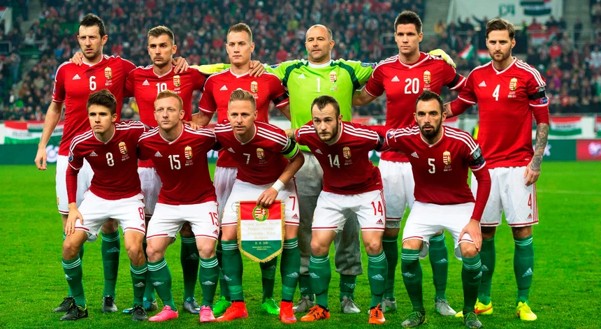

Seleção Húngara na UEFA Eurocopa
A seleção Húngara parte de um bom momento na história do país, com o jovem porém experiente Dominik Szoboslai, meia do Liverpool, a seleção vem em busca de seu primeiro título após boas campanhas no passado como o segundo lugar na Copa do Mundo de 1954.
